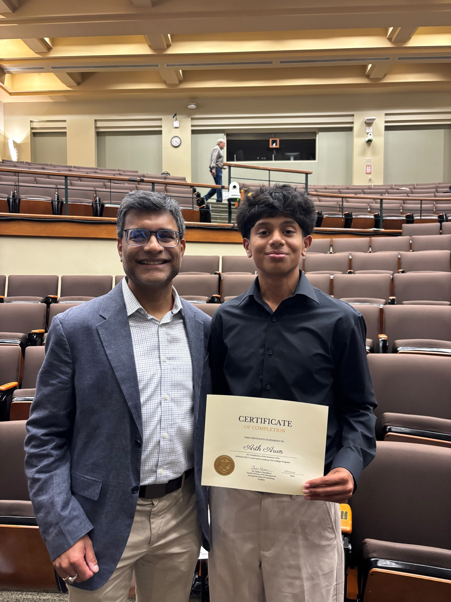
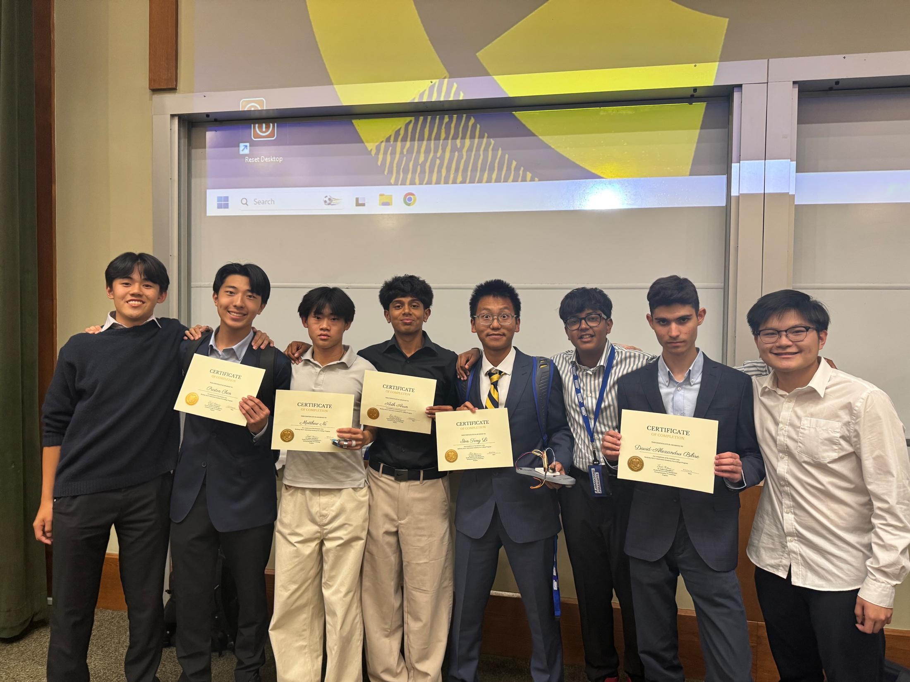
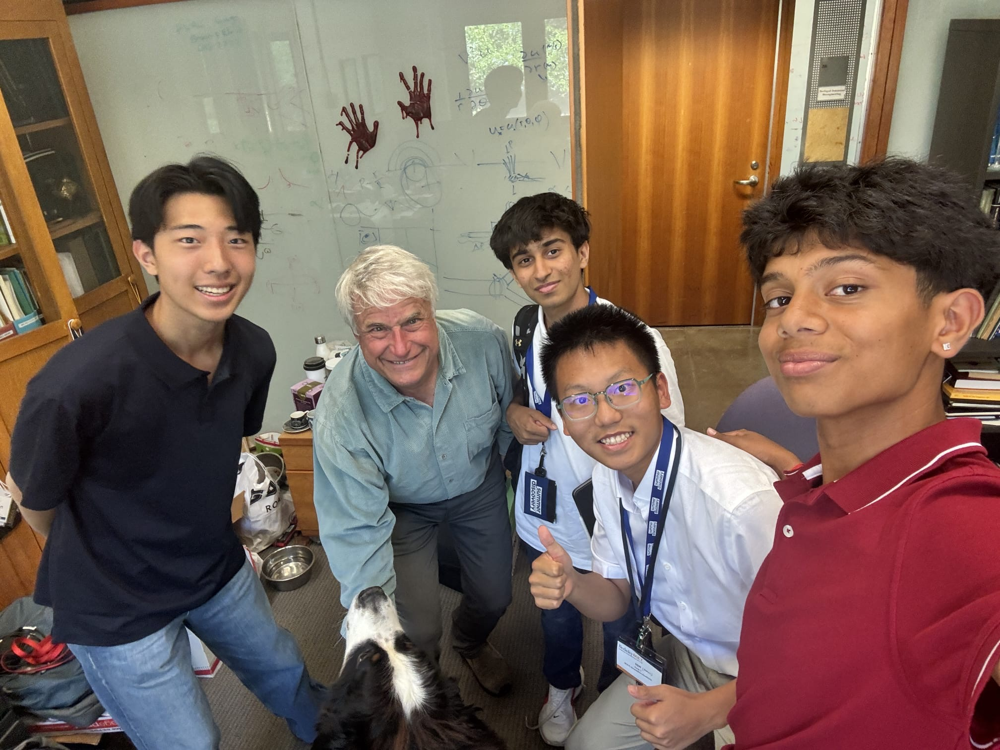

Berkeley M.E.T. Innovation Academy
Completed the pre-college program by building and pitching GlycoStep, an adaptive smart-insole concept for diabetic neuropathy.
Completed the pre-college program by building and pitching GlycoStep, an adaptive smart-insole concept for diabetic neuropathy.
GlycoStep is a three-layer smart-insole concept that combines pressure sensing, adjustable pneumatic pods, and live app feedback. The system is designed to detect pressure hotspots and actively redistribute pressure before unnoticed foot damage progresses.



